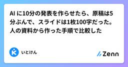
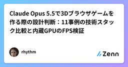
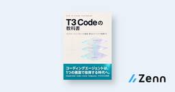
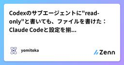

Zennの「Codex」のフィード
フィード

Coding AgentにDDDを守らせたいならArchUnitを使おう
Zennの「Codex」のフィード
DDDのSkillを使っても、AGENTS.mdにDDDに関する内容を書いても、Coding AgentがDDDを必ず守るとは限らない。 SpaceXSIのLauren Tan（Potato）が以下の図を紹介していたが、品質を高めるためには、SkillやAGENTS.mdより手前で防ぐ仕組みが作れないか考えるべきである。 参考： ArchUnitはピラミッドの2.静的チェックにあたる。 私はハーネスは大きく2種類に分けて考えている。 2.静的チェックなどの成果物側にかけるハーネス 3.検証、4.文章などのCoding Agent側にかけるハーネス 品質の最低ラインを確保するため、成果物側...
5時間前

要約は手元のGemma、公開できる実装はクラウドへ。GPU 1台で回す振り分け表
Zennの「Codex」のフィード
こんにちは、mocoです。ふだんは手元のPCで、文章をまとめたり、小さな道具を作ったりしています。要約とコードの依頼が混ざると、私は行き先を決めるだけで手が止まることがあります。そこで、入力を外に出せるかと、何を頼むかの二つだけで振り分ける表を作りました。 入力の区分は人が付けます。Cは公開可否の確認待ちです。Dは、手元のモデルが出したコードをテストして採用する手順をこの構成では用意していないので、保留にしています。人が公開できる仕様に書き直せたら、そこでBとして振り分け直せます。Eは公開可否の問題がなくても、手元のGPUを使うかクラウドに回すかの基準をまだ決めていないので、保留にしまし...
5時間前

AI に10分の発表を作らせたら、原稿は5分ぶんで、スライドは1枚100字だった。人の資料から作った手順で比較した
Zennの「Codex」のフィード
AI エージェントに「このメモから、来週の月例会で10分話す発表を作って。スライドと原稿を」と依頼すると、見た目の整った .pptx と原稿が返ってきます。私はこれを3回試し、原稿は3回とも 1,300〜1,600 字でした。1分に約 300 字で話すとすると、約5分ぶんです。聞き手に一番関係のある話は、3回のうち2回、発表の後半か最後にありました。 原稿がすでにある場合も、スライドには別の癖が出ます。同じ10分の原稿から作らせた .pptx は、1枚の文字が平均 100 字ほどで、紺と赤の数字のカードが並ぶ、どこかで見た形になりました。そこで、話す発表の組み立て方と、人が作った資料を測...
7時間前

Codex・Claude Code・Antigravity で使えるモデル一覧と位置づけマップ（2026年11月時点）
Zennの「Codex」のフィード
AI コーディングツールとしてよく使われる Codex、Claude Code、Google Antigravity の3つについて、2026年11月時点で利用できるモデルを整理しました。 まずは3つのツールで使える主要モデルを、推論能力と想定消費トークン数（コスト・クォータの重さ）の2軸でマッピングした全体図です。 横軸：複雑な開発タスクでの想定消費トークン数（対数スケール） 公式に「1タスクあたりの消費トークン数」という単一の数値が公開されているわけではないため、以下の3つの要素を掛け合わせた相対的な重さ（クォータ・コスト消費量）を目安に配置しています。 出力 API 単価（ベースコ...
9時間前

AIが出した改善案を、ハーネスに入れる前に
Zennの「Codex」のフィード
開発が一区切りついたとき、次の仕事にも持ち越せそうな学びが四つ出てきました。全部をハーネスに書き足す前に、私はCodexのエンジニアリング役、イーロンさんに見てもらいました。それぞれ、次の仕事の何を変えられるのか。 決まったのは、既存の資料に検証例を一つ足すことでした。ここでいうハーネスは、AIと仕事をするときに使う判断基準や検証例、どの役が何を判断するかまで含めた仕組みです。 私はイーロン・マスクさんの仕事の進め方が好きで、ものを作るときによく参考にしています。なかでも、本人がエンジニアリングの原則として話している、この順番です。 要求を疑う いらない部品や工程を削る 残ったものを単純...
11時間前

いつもの tmux を PC でもスマホでもブラウザから — エージェントの承認待ちも一目でわかる web-tmux を作った
Zennの「Codex」のフィード
tmux のセッションを、PC でもスマホでもブラウザから操作できる web-tmux を作りました。MIT ライセンスで公開しています。 （架空のデモ用プロジェクトで録画しています。エージェントのペインは台本どおりに動くスクリプトです） 左のサイドバーにセッション・ウィンドウ・ペインが並び、右がいつもの端末です。Claude Code や Codex を tmux の中で動かしていると、どのペインが作業中で、どれが自分の承認を待っているかも、ここに出ます。 私自身、いちばん使っているのは PC のブラウザです。 tmux でエージェントを何本も並べて走らせていると、どれが止まっているの...
14時間前

スマホから Claude Code / Codex / Kimi Code を続ける方法：公式と自ホストの選択肢
Zennの「Codex」のフィード
この記事は Qiita に投稿した同じ内容 を Zenn にも掲載したものです。 筆者は TaroBird の作者です。GitHub は cloveric、名前は Eric Wei です。この記事では、まず各社の公式リモート手段を説明し、そのあとに Happy、Paseo、Omnara、そして自分が保守している TaroBird を含むサードパーティの選択肢を、確認できた範囲で公平に書きます。利用者数、ベンチマーク、架空の引用は書いていません。 本稿の TaroBird に関する事実は、2026-11-27（Asia/Shanghai）に cloveric/tarobird を確認した内...
15時間前

Diagram Designを読んで分かった、AIエージェントに“編集デザインの図”を描かせる仕組み
Zennの「Codex」のフィード
エージェントに図を描かせると、たいてい「汎用的な角丸ボックスの羅列」が返ってくる。cathrynlavery/diagram-designは、その問題を「センスを文章化する」ことで解こうとする Agent Skills だ。2026年11月27日時点でスター約73,900、GitHub Trending 9位。MITライセンス、2026年4月公開、コミット499回。 本記事では、リポジトリを実際に読んで確認した内容をもとに、スキルの構造、デザインシステム、ブランド取り込みの仕組み、プライバシー面、限界を技術的に整理する。なお筆者はコードを実行していない。以下はREADME・PRIVACY...
16時間前

ZennのHTML埋め込みを試してみた
Zennの「Codex」のフィード
Claude CodeやCodexに頼むと、配色やレイアウトを整えたHTMLを作ってくれます。これを記事にも使えたら、図を用意する手間を減らせそうです。 ZennのHTML埋め込みで、どこまでできるのか試してみました。カードやタブから、クリックできる構成図、CSSアニメーションまで、38個の例を載せています。 見た目を変えることで、説明も読みやすくなるでしょうか。使ってみたい場面と、気になった点を各例に添えました。図はHTML・CSS・SVGだけで作っています。 表示・動作について この記事は2026年11月27日時点の検証です。HTML埋め込みはBeta機能のため、Zennの仕様変更や...
19時間前

GenBGTに「その他」の費用を追加― Rustで既存クライアントとの互換性を維持する
Zennの「Codex」のフィード
個人開発しているライブ予定・費用管理アプリ「GenBGT」に、新たな費用項目として「その他」を追加しました。 GenBGTでは、ライブのスケジュール管理に加え、チケット代や交通費、宿泊費などを登録し、ライブに掛かった費用を集計することが出来ます。 今回は比較的小規模な機能追加ですが、実装にあたってはデータベースのマイグレーションや既存クライアントとの後方互換性、入力値のバリデーションなど、考慮すべき点がいくつかありました。 機能追加の背景と、技術的な対応内容について紹介します。 これまでのGenBGTでは、以下の費用を管理することが出来ました。 チケット代 ドリンク代 交通費 宿泊費 し...
1日前

Claude Code で KiCad 基板を設計して JLCPCB に発注し、Codex とも同じ条件で比べた 1
1
Zennの「Codex」のフィード
注文した基板の KiCad レンダー（端子台の凡例を入れる前）。65 × 56.5mm、2 層 11 月の後半に、Claude Code に KiCad で Raspberry Pi 用の I/O 基板を設計してもらい、JLCPCB に注文しました。5 枚のうち 2 枚は部品の実装つきで、送料込み $40.44 です。そのあと、同じ依頼文を Codex と Claude Code の両方に出して、一から設計させて比べてみました（こちらは見積もりまで）。 実際に動くかは、基板が届いてから確かめます。 AI に基板を設計させて発注した記事は、もういくつもあります（Nobkat さんの全自動設...
1日前

LinearのクラウドコーディングエージェントでBYOKを使う方法
Zennの「Codex」のフィード
2026年11月12日、Linearはクラウドコーディングエージェント向けにBring Your Own Key（BYOK）を提供開始しました。会社がOpenAIやAnthropicと直接契約している場合、またはOpenRouterやAWS Bedrockのようなゲートウェイ経由でモデルを利用している場合、Linearのエージェントをそのアカウントに接続できます。Linear経由でモデル利用を購入する代わりに、契約済みの料金や既存クレジットを使えます。 ただし、発表では短くしか触れられていない注意点があります。BYOKが対象にするのはモデルであり、マシンではありません。エージェントの各セ...
1日前

Claude Opus 5.5で3Dブラウザゲームを作る際の設計判断：11事例の技術スタック比較と内蔵GPUのFPS検証
Zennの「Codex」のフィード
GPT-6 Astraによる3D生成の盛り上がりと、Claude Opus 5.5によるコード生成アニメーションの波に続き、ここ数週間でX上に「ブラウザでそのまま遊べる3Dゲーム」が相次いで公開されました。2026年11月27日、私は話題になった11プロジェクトの実装構成を調査し、オープンソースとして公開されている2つのリポジトリ（turbo-kart-rallyとvoxel-musou）を内蔵GPU（Intel UHD 620）搭載のノートPCでローカル実行し、使用されているモデルAPIの挙動を検証しました。 これからThree.jsとLLMで3Dブラウザゲームのプロトタイプを作る場合...
1日前

T3 Codeの教科書─マルチエージェントを1つの画面・異なるデバイスで指揮する─
Zennの「Codex」のフィード
---※T3 Codeを使ってみたいけど、最近話題になったテレメトリ問題が気になっている人も多いと思います。確かに、今回の件はTheo氏や開発側の対応に問題がありました。この問題についても解説しています---T3 Codeは、マジでエージェント開発の常識に革命！特にマルチエージェントによる共同作業やデバイスをまたいだ作業の引き継ぎが使いやすくてめちゃめちゃ便利です。複数のClaude Code・Codex・Grok Build・Antigravityを、自分のサブスクのまま1つの画面で完全掌握！その他のモデルもOpenCode経由で使えるのでローカルLLM界隈からも注目を集めていますデスクトップで起動して、スマホから承認。途中でモデル切り替え、タスク丸投げ、worktreeで衝突なし、ワンボタンでPR。速い。気持ちいいUI/UX。リモートが神！！！「複数エージェントを指揮する作業が楽しくなった」って声が止まらない。もうバラバラのアプリに戻りたくない。これが、今一番熱いマルチエージェントの制御プレーンアプリなんです！この本は、Claude CodeもCodexも、スマホ1台で指揮できる。コーディングエージェントの司令室「T3 Code」の魅力と使い方を、隅から隅まで解説する本です。ターミナルのタブを行き来して承認待ちのエージェントを探す毎日から抜け出しませんか。T3 Codeは、Claude Code、Codex、Cursor、Antigravityなど手持ちのコーディングエージェントを1つの画面にまとめ、デスクトップ、Web、スマホのどこからでも指揮できるオープンソースのアプリです。本書では、インストールから最初のPRを出すまでのハンズオン、スレッドとワークツリーによる並列作業、途中でのモデル切り替え、スマホからの承認、PRの見張り、定期実行とワークフローによる自動化までを、初心者にも分かるように1つずつ解説します。Orca、cmux、herdrとの違いや、Gemini 4 Neonを使いたい人向けの使い方も扱います。
1日前

反AI寄りだったSES出身エンジニアが、ゴリゴリAI駆動開発のコンサルに入って感じたこと
Zennの「Codex」のフィード
私は去年までAIをほとんど触ったことがありませんでした。ChatGPTは一度も使ったことがなく、Claudeは存在すら知りませんでした。どちらかというと反AI寄りでした。 それが今年頭に今のコンサル会社に入り、今では建設業向けの基幹システムやSaaS型のアプリをClaude CodeとCodexでAI駆動開発しています。 この1年でAIに対する見方が大きく変わりました。その感覚を発信したいと思います。 前職はSESで、複数のSIerの現場に常駐しました。 大きな現場は官公庁のプロジェクトで、メンバーは何十名、年単位で回していました。データベースの列を1個追加するだけで実装は1日でも、テス...
2日前

Codexのサブエージェントに"read-only"と書いても、ファイルを書けた：Claude Codeと設定を揃えて見つけた穴と直し方
Zennの「Codex」のフィード
yomitokaでは、1つのリポジトリでClaude CodeとCodexを使い分けています。コードのレビュー役などのサブエージェントは両方に同じ指示で置き、レビュー役は「読み取り専用」にしていました。Codexの定義にはsandbox_mode = "read-only"と書いていました。 ところが手元のCodex（codex-cli 0.172.0）で、sandbox_mode = "read-only"と書いたサブエージェントにファイルを作らせると、作れました。サブエージェントの記録に残っていたsandboxは、親と同じworkspace-writeです。 Claude Codeの...
2日前

T3 Code入門 ― 複数のAIエージェントを1画面で操るオープンソース管制面の日本語ガイド
Zennの「Codex」のフィード
Ping.gg が作るオープンソースの管制面ツール「T3 Code」の日本語実践ガイド。Claude Code や Codex といった既存のコーディングエージェントを置き換えず、1つの画面から束ねて操る T3 Code について、スレッドとワークツリーの分離モデル、4段階の権限モード、プロバイダ別の接続、スマホやリモートからの操作まで、公式ドキュメント（リポジトリ内 docs）を初学者の動線に組み替えて解説します。構築・実行の記録つき。対象バージョンは T3 Code v0.1.10。
2日前

GPT-6.2 AstraとSolの違い：トークン効率・キャッシュ・料金の仕組みを解説
Zennの「Codex」のフィード
日々の開発で得た知識を発信しながら、「あったら便利」「作ってみたい」と思ったアイデアを形にしています。 これまでに、グループ旅行アプリ Trip Supporter、スコア管理サービス PointPia、リアルタイム共有サービス JustNow などを開発しました。 さらに、刺繍やオリジナルキャラクターを中心としたアパレルブランド MAD TOMMY WITH... も運営しています。 開発したサービスや技術記事は chicchi.work で紹介しています。 先に結論： OpenAIは2026年11月17日（米国時間）、複雑な専門業務向けのGPT-6.2 Astraと、日常業務向けのG...
2日前

Museでcodex CLIを動かして、コーディング能力アップ
Zennの「Codex」のフィード
MetaのパーソナルAIエージェント「あんこ」(Muse) あんこは先回りして色々なことを提案してくれる頼もしいパートナー。ただ、プログラムコードを書いたりというのは苦手なようです。 そんなときは、ChatGPTにお願いできたら良いなぁと思っていたのですが、APIで接続すると、サブスクとは別に従量課金でお金がかかるし… でも、CODEX CLI経由で接続すれば、サブスクの範囲内で使えるよ！ということを、ChatGPTに教えてもらったので、早速試してみました。 この記事では、その「あんこ」に依頼をしたときの手順と、途中でハマったところをまとめます。同じMuseを使っている人は、このプロンプ...
2日前

ライブラリを替えたのに、AIが古いコードを書く
Zennの「Codex」のフィード
たとえば、ライブラリ B への移行が終わったのに、エージェントが A のコードを書きました。コードでは B が使われていましたが、検索で出てきた記憶には「A を使う」と書いてありました。そこで見直すのは、新しく何を覚えさせるかだけでなく、以前の決定をどう扱うかです。 update_memory で既存の記憶を編集すると、前の版を参照できます。新しい記憶で置き換えた場合、古い記憶は通常の検索対象から外れます。履歴をたどるときは recall に include_superseded=true を指定できます。似た記憶が候補として示された場合も、前の決定と新版の内容を照らし合わせて判断します...
2日前